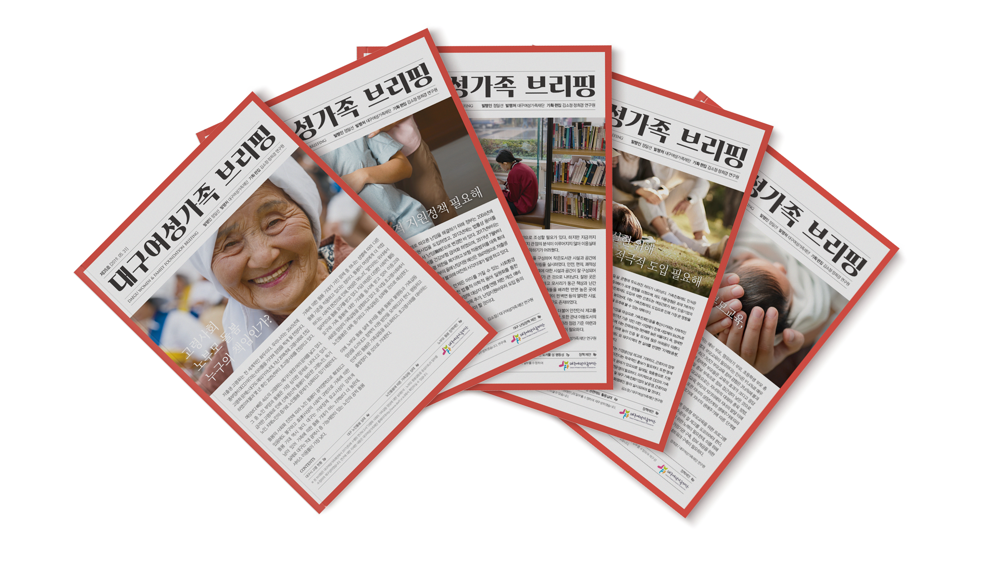
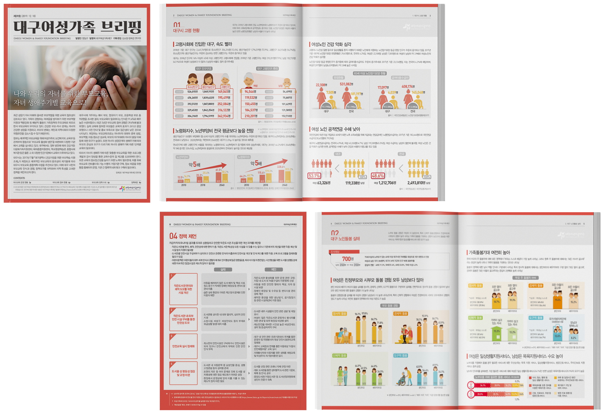

대구여성가족재단
브리핑 격월지
대구여성가족정책 동향 및 여성가족 관련 이슈와
현안과제 분석을 통해 정책 아이디어를 제안하고
정책 연계 방안 모색을 위해 제작된
'대구여성가족 브리핑' 시리즈
Concept
'대구여성가족 브리핑' 시리즈는 격월지로, 각 호의 주제를 한번에 드러낼 수 있도록 메인 주제가 되는 사진을 첫 장에 크게 배치하고 내부 편집은 분석 결과를 효과적으로 나타내기 위해 인포그래픽을 적절히 사용하여 표현하였다.

여성인권에 대한 많은 관심을 촉구하기 위해 눈에 띄기 쉬운 붉은색을 사용하고 타이틀을 두꺼운 폰트로 사용하여 강조의 효과를 극대화하고자 하였다.
